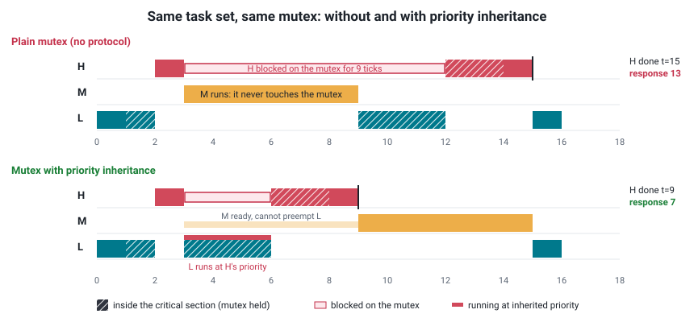

Priority inversion
A fixed-priority scheduler promises that urgent tasks run first. Sharing a resource between priority levels can break that promise, without limit, unless the lock itself takes part in scheduling.
- Define priority inversion and distinguish bounded from unbounded inversion.
- Trace an unbounded inversion scenario tick by tick.
- Explain the priority inheritance protocol, its guarantees and its limits.
- Explain the original and the immediate priority ceiling protocols at a conceptual level and compare them with inheritance.
- Reduce the risk of inversion through design, independent of the protocol.
The concept
Priority inversion: a higher-priority task is prevented from running while a lower-priority task runs instead, because the higher-priority task is blocked on a resource held by a lower-priority task.
Bounded inversion: the blocking lasts at most as long as the lower-priority task's critical section. This is inherent to sharing a resource and is accounted for in timing analysis.
Unbounded inversion: while the low-priority owner holds the resource, medium-priority tasks that do not use the resource preempt it. The high-priority task's delay then depends on the run time of unrelated medium tasks and has no bound.
Bounded inversion is a cost; unbounded inversion is a defect. The second one is what protocols remove.
Worked scenario
- L (low), released at t = 0: computes 1, locks the mutex, works 4 inside, unlocks, computes 1.
- H (high), released at t = 2: computes 1, locks the mutex, works 2 inside, unlocks, computes 1.
- M (medium), released at t = 3: computes 6. Never uses the mutex.
| Tick | Plain mutex | With priority inheritance |
|---|---|---|
| 0 | L runs | L runs |
| 1 | L locks, runs inside (1 of 4) | same |
| 2 | H released, preempts L, runs | same |
| 3 | H tries to lock: blocked. M released; M (medium) > L (low): M runs | H blocked; L inherits H's priority. M released but L (now high) > M: L runs |
| 4–5 | M runs | L finishes its critical section at end of t = 5 |
| 6 | M runs | L unlocks, drops to low. H gets the mutex, runs |
| 7–8 | M runs (finishes end of t = 8) | H finishes at end of t = 8 |
| 9–11 | L finally resumes its critical section | M runs t = 9 … 14 |
| 12–14 | L unlocks at t = 12; H runs, finishes end of t = 14 | M runs |
| Result | H response time 13 ticks, of which 6 spent waiting for M | H response time 7 ticks; blocking limited to L's critical section |
With the plain mutex, H's delay grows one tick for every tick of M's work, and with several medium tasks it grows further. Nothing in H's or L's code changed; the delay came from a task that never touched the resource.

A real case: Mars Pathfinder (1997)
Days after landing, the Pathfinder lander began resetting itself. A low-priority meteorological task held a mutex protecting a shared information bus; the high-priority bus-management task blocked on it; medium-priority communication tasks preempted the low-priority holder. The high-priority task missed its deadline, a watchdog detected it, and the system reset. The mutex had a priority-inheritance option that was disabled. Engineers reproduced the fault on a ground replica and enabled inheritance on that mutex with an uploaded patch.
Priority inheritance protocol
Priority inheritance (Sha, Rajkumar, Lehoczky, 1990): when a task blocks on a mutex, the owner of the mutex has its effective priority raised to the blocked task's priority if that is higher. When the owner releases the mutex, its priority returns to the highest of its base priority and the priorities of tasks still blocked on mutexes it continues to hold.
In full implementations inheritance is transitive: if the owner L is itself blocked on a second mutex held by K, K inherits too.
Guarantees. A high-priority task can be blocked only for the duration of lower-priority critical sections it actually conflicts with: at most once per lower-priority task, and at most once per mutex it may need. Medium-priority tasks can no longer extend that time.
Limits.
- It does not prevent deadlock. Two tasks that lock in opposite orders still deadlock.
- Chained blocking: a task needing several mutexes may be blocked once on each of them, by different lower-priority tasks. The bound exists but can be large.
- It works only with owned objects. Semaphores, event groups and queues have no owner to boost.
- It cannot help if the owner is blocked on something else (a queue, a delay) while holding the mutex. Boosting a blocked task changes nothing.
Priority ceiling protocols
Priority ceiling of a resource: the highest priority of any task that may lock it. It is fixed at design time, so every user of the resource must be known.
Original priority ceiling protocol (OCPP). A task may lock a resource only if its priority is strictly higher than the ceilings of all resources currently locked by other tasks (the current "system ceiling"). Otherwise it blocks, and the task holding the resource that sets the system ceiling inherits its priority. Guarantees on a single processor: a task is blocked at most once, for at most the duration of one lower-priority critical section; chained blocking cannot occur; and deadlock cannot occur.
Immediate priority ceiling protocol (IPCP, also called "highest locker" or ceiling locking; it is POSIX PTHREAD_PRIO_PROTECT). When a task locks a resource, its priority is raised immediately to the resource's ceiling, and restored on unlock. A task that could contend for the resource cannot even start running while the resource is held, so it never blocks on it; it waits once, before it starts. Same worst-case blocking bound as OCPP, deadlock-free on a single processor provided tasks do not block while holding a resource, and simpler to implement. The price: the priority is raised on every lock, even when no contention would have happened.
| No protocol | Priority inheritance | Original ceiling | Immediate ceiling | |
|---|---|---|---|---|
| Unbounded inversion | possible | prevented | prevented | prevented |
| Times H can be blocked | unbounded | once per conflicting mutex / lower task (chains possible) | at most once | at most once |
| Prevents deadlock | no | no | yes (single CPU) | yes (single CPU, no blocking while holding) |
| Needs static knowledge of users | no | no | yes | yes |
| Priority changes | none | only under contention | only under contention | on every lock |
Priority inversion timeline
Interactive: the worked scenario, side by side
Plain mutex (no protocol)
Mutex with priority inheritance
A coloured stripe above a running block shows the priority the task runs at when it differs from its own. Pale bars: Ready, not running. Black bar: task completed.
Switch the right-hand side to the immediate ceiling. L's priority rises the moment it locks at t = 1, so H, released at t = 2, does not preempt it: H waits Ready rather than blocked, and never blocks on the mutex at all. Its response time is the same 7 ticks as with inheritance.
Reducing inversion by design
- Keep critical sections short. Every protocol bounds blocking by critical-section length; shorter sections mean a smaller bound.
- Avoid sharing resources across distant priority levels. If a high-rate control task and a background logger share data, pass it through a queue instead.
- Use a gatekeeper task for slow peripherals so high-priority tasks never wait on a lock held by a low-priority one.
- Never block while holding a mutex. Inheritance cannot speed up an owner that is waiting.
- Remember non-lock inversions: a high-priority task waiting on a queue that a low-priority task fills, or on a semaphore a low-priority task gives, is inverted too, and no protocol helps. Set the producer's priority to reflect the consumer's urgency.
Common mistakes
- Protecting a resource with a binary semaphore: no owner, so no inheritance. The scenario above is then exactly what happens.
- Assuming inheritance makes long critical sections harmless. It removes the medium-task interference; L's whole critical section still delays H.
- Releasing nested mutexes out of order in kernels whose inheritance assumes nesting; the owner can be left at the wrong priority.
- Setting a priority ceiling lower than a real user's priority (immediate ceiling). That user can then preempt the holder and the protection is lost.
- Testing only on a lightly loaded system. Unbounded inversion needs a medium task to run at exactly the wrong time; it appears under load in the field.
What this becomes in Zephyr
k_mutex inheritance
- Every
k_mutexuses priority inheritance; there is nothing to enable. When a thread blocks ink_mutex_lock(), the owner is raised to the waiter's priority (if higher) and restored onk_mutex_unlock(). - The boost applies to the mutex's direct owner. The kernel source documents that mutexes contributing to inheritance must be released in reverse order of acquisition; follow a strict nested lock/unlock discipline.
CONFIG_PRIORITY_CEILINGlimits how high inheritance can raise a thread (default −127, effectively no limit). It is a cap on inheritance, not an implementation of the priority ceiling protocol.- Zephyr has no built-in immediate-ceiling mutex. The same effect can be obtained by raising the thread's priority with
k_thread_priority_set()around the critical section, or byk_sched_lock()for very short sections, which acts like a ceiling above every thread. k_sem,k_eventandk_msgqnever apply inheritance.